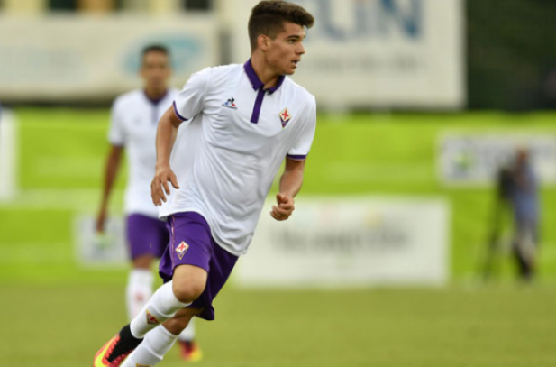
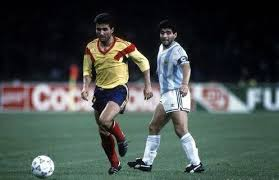

Ianis Hagi
Ianis, Gheorghe's son was inspired and impacted by the game of soccer because he grew up with his father always playing the sport. He is now 20yrs old and plays/played for a vast majority of teams including the one his father played for in Romania. He is known as a game changer just like his father was and wants to proceed his career with soccer.
See ProfileHis grandfather

Gheorghe's grandfather was the first who brought him to have the love for the game. The first soccerball he ever got was from his grandfather and it was made out of leather and the inside was stuffed with horse hair. (The first/"orginial" soccerball. His parents weren't as encouraging until he started gaining his spot in professionalism.
See ProfileDiego Maradona
Although, both Diego Maradona and Gheorghe are around the same age Maradona made a huge impact on Hagi because he looked up to Diego as a role model and wanted to learn from him. Later on in his career, Gheorghe was known as the "Maradona of Romania" and people were astonished by his plays, goals, and teamwork on the field that doesn't compare to any other romanian player.
See Profile